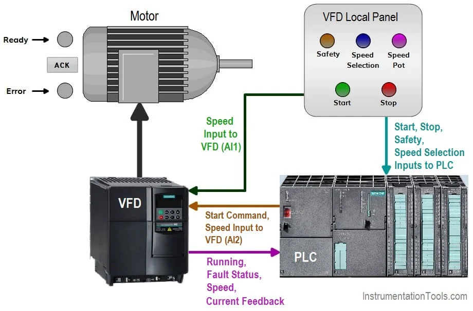
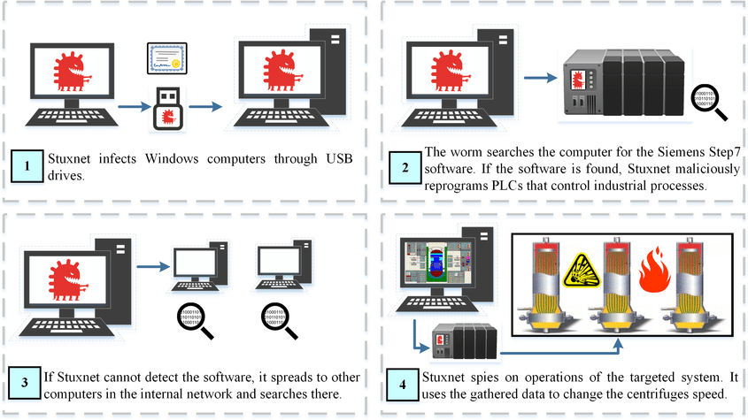
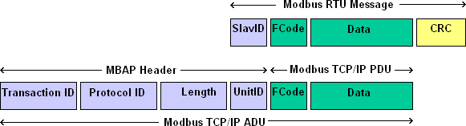
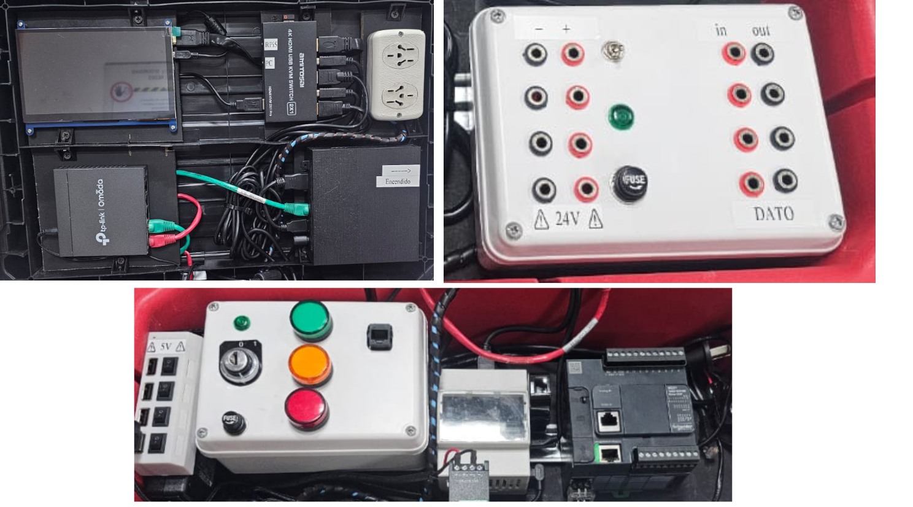

Se detalla aquí los diferentes casos de estudio que estamos abordando.
Mientras que Industria 4.0 propone la hiper-conectividad de las redes de producción, por otro lado requiere de soluciones de ciberseguridad robustas por diseño.
Recordando que los pilares de la ciberseguridad son: Integridad, disponibilidad y confidencialidad (aún en OT - ISA62443 - NIST SP800-82r3), la criptografía resulta en una herramienta que por diseño garantiza confidencialidad e integridad. Por ello, su implementación se considera fundamental en este proyecto.
La penetración de uso de protocolos seguros es muy baja (alrededor del 6%). Peor aún: el uso de versiones reforzadas de los protocolos Legacy es del 1%.
Los protocolos legacy son muy efectivos en el ambiente industrial: la modalidad maestro - esclavo los hace ágiles y eficientes. Esto mismo, puede explotarse fácilmente en la mayoría de los protocolos industriales mediante un ataque MITM (Ver abajo: Ataques a PLC) con serias consecuentcias potenciales.
El uso de certificados evita estos ataques MITM y sus consecuencias sobre la integridad.
Los secretos industriales se presentan explícitos en las comunicaciones, es decir, el cómo se hace. Las comunicaciones SCADA – PLC en Modbus TCP viajan en claro. La intercepción de estos mensajes permitiría exfiltrar información confidencial y secretos industriales: puede reconstruirse exactamente el know-how de cualquier producto
La implementación de capas TLS en los protocolos industriales incorpora la criptografía necesaria para el cifrado de las comunicaciones SCADA - PLCs.
En este proyecto se estudia la implementación de una infraestructura criptográfica PKI en Modbus TLS, basándose en la documentación de Modbus TLS, con AC descentralizada por blockchain y autenticación con segundo factor al máximo nivel de seguridad (NIST AAL3).
El uso de herramientas forenses no solo permiten conocer lo sucedido tras un ataque, sino que además pueden asistir en el monitoreo de los SCADA.
El análisis de la memoria RAM y del disco busca entender:
Los Sistemas de Control Industrial son muy vulnerables debido a que no es posible ni actualización del sistema operativo, antivirus ni aplicaciones.
Así, a diario, estos sistemas poseen cada vez más vulnerabilidades que puedan explotarse.
Se estudia el uso de Forensia en Vivo para identificar y detectar muchas vulnerabilidades, de modo que puedan tratarse, sin necesidad de realizar actualizaciones que pudieran poner en riesgo al sistema.
Construimos un scanner OT portable con interfaz única para descubrir PLCs en campo, inventariarlos y enriquecerlos con vulnerabilidades conocidas (CVE) sin depender de Internet. La solución integra módulos de descubrimiento activo/pasivo, browsing seguro de variables Modbus, y correlación local con NVD mediante feeds precargados.
Reduce el tiempo de alistamiento y el tiempo a información accionable (T0→T1) en escenarios industriales con conectividad limitada, personal mixto (no experto en OT) y ventanas de mantenimiento acotadas.
Se plantea una situación en la que el atacante, luego de un ataque por escalada de privilegios, logra acceder a una red industrial, y por lo tanto puede ver un PLC (Programmable Logic Controller). Este tipo de dispositivos se encuentran en el Nivel 1 de la Arquitectura de Purdue.
Una vez se ha accedido a la red, se sobreescriben datos almacenados en las direcciones de memoria del PLC, logrando modificar el comportamiento de los actuadores conectados al mismo.
La primera acción a realizar por el script es la conexión al PLC mediante protocolo Modbus TCP/IP. Los inputs a ingresar por el usuario serán la dirección IP del PLC y el puerto (Modbus: 502).
Los casos 1, 2, 3 y 4 son ejecutados mediante un mismo script que presenta un menú con opciones. El caso 5 se presenta en forma separada.
Supóngase que el PLC está conectado a un VFD (Variable Frequency Drive) que controla un motor de corriente alterna. El script (ejecutado automáticamente mediante un USB Autorun que simula un “insider” en la planta) escribirá valores numéricos en los registros de salida del VFD, simulando una alteración del comportamiento esperado del motor.

Fuente: https://instrumentationtools.com/how-to-control-vfd-with-plc/

[cite_start]Fuente: https://www.researchgate.net/figure/Attack-strategy-of-Stuxnet_fig5_340331302 [cite: 98]

[cite_start]Fuente: https://www.simplymodbus.ca/TCP.htm [cite: 83]
La integración de la red de producción con la red corporativa promete mayor eficiencia en los procesos productivos.
Pero esta integración expone a las redes industriales (hechas para funcionar aisladamente), a vulnerabilidades provenientes de las redes corporativas, y de Internet. Más aún, en el otro sentido, es posible la filtración de secretos industriales.
La integración entre estos niveles, se debe realizar de manera segura incorporando dispositivos que administren el tráfico en ambos sentidos.
Nos dedicamos a la Investigacion. Realizamos un banco de pruebas que desarrollamos para nuestras necesidades diversas de pruebas específicas sobre sistemas OT requeridas por los casos de estudio: Ciberseguridad y Ciberdefensa, Forensia, Hacking y Criptografía en OT.
